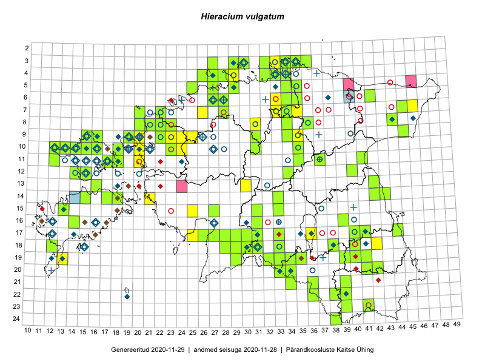

Hieracium vulgatum
Uuendatud: 2016-12-01
Kaardile koondatud taksonid: Hieracium vulgatum Fr.

Kaart põhineb 42 kirjel, neist vaatlusi 39 ja eksemplare 3.
Kuvatud viited 20 esimesele andmebaasikirjele, ülejäänud PlutoFis
- Toomas Kukk, Eerik Leibak: 2015-08-11: 09-15: ala
- Toomas Kukk, Eerik Leibak: 2015-08-11: 09-15: GPS punkt
- Toomas Kukk: 2015-06-19: 06-27: ala
- Toomas Kukk: 2015-06-19: 06-27: GPS punkt
- Malle Leht: 2015-07-25: 18-40: ala
- Katrit Karus, Tõnu Feldmann: 2015-08-07: 07-34: ala
- Toomas Kukk, Kersti Tambets, Timo Luhamäe, Janika Sammasto, Sten Mander: 2014-07-29: 18-42: ala
- Jana-Maria Habicht, Ester Valdvee: 2015-07-20: 07-34: ala
- Jana-Maria Habicht, Ester Valdvee: 2015-07-31: 08-34: ala
- Jana-Maria Habicht, Ester Valdvee, Kirke Pilvik: 2015-07-25: 09-34: ala
- Jana-Maria Habicht, Ester Valdvee, Kirke Pilvik, Anu Nurk: 2015-07-30: 09-35: ala
- Oliver Parrest: 2015-07-01: 19-13: ala
- Helle Mäemets, Mare Leis: 2015-06-25: 17-36: ala
- Tõnu Ploompuu, Anna-Grete Rebane, Hanna-Eliisa Luts: 2015-07-20: 10-20: ala
- Hanna-Eliisa Luts, Tõnu Ploompuu, Anna-Grete Rebane: 2015-07-19: 10-24: ala
- Hanna-Eliisa Luts, Tõnu Ploompuu: 2015-08-13: 11-20: ala
- Meelis Muuga, Tõnu Ploompuu: 2015-08-17: 09-25: ala
- Tõnu Ploompuu, Sirje Lagle: 2015-08-18: 09-24: ala
- Toomas Kukk, Oliver Parrest: 2016-07-08: 15-25: ala
- Toomas Kukk, Hannes Pehlak: 2016-07-19: 18-31: ala